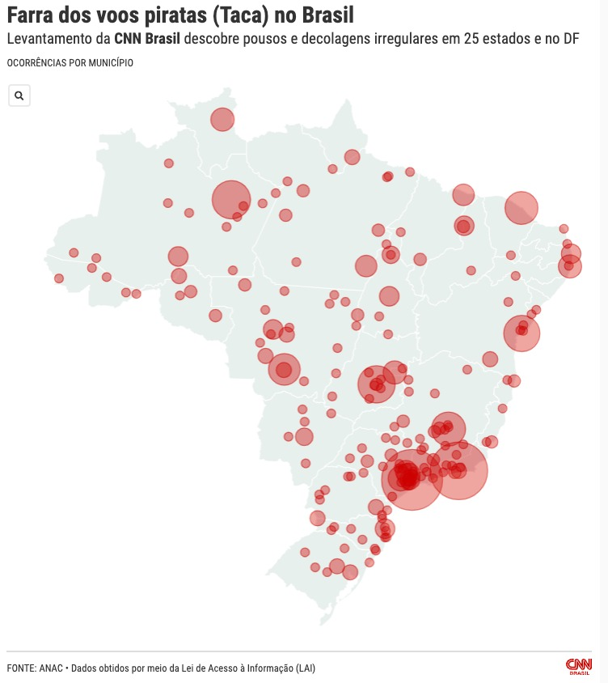

I can report both in Portuguese and English,
cover breaking news at a fast pace,
do research on national
or cross-border
journalistic projects,
analyze
huge databases using programming languages ( Python, SQL),
automate journalistic tasks (BeautifulSoup, Selenium - see my FOIA scraper below),
get documents using Freedom of Information requests and open records.
(I wrote a guide on how to use it).
I am also one of the
Brazilian Association for Investigative Journalism (Abraji) directors, one of the world's leading associations of investigative reporters, and
develop different projects there to help
journalists get and use public data.
One of these projects was awarded a six-month fellowship
to study at the University of Oxford and became a national training on public records for thousands of journalists.
How Endangered Brazilian Timber Ends Up in the Bronx (OCCRP, Revista Piauí)
A long journalistic investigation reveals how gang members in Brazil have managed to ilegally extract and export yellow ipe wood to the USA in a highly profitable
fraud scheme.This investigation has begun with a spreadsheet and multiple cross-referencing with public datasets.
Exposing secret offshores in Luxembourg (OCCRP, Revista Piauí)
Coordinated by OCCRP, Le Monde and 15 other media partners around the world, this project has revealed how secret companies have been used for crime and corruption.
The data was obtained by scraping Luxembourg's business register website. I was responsible for the data analysis and writing stories related to Brazilian figures.
How China Tobacco's worldwide expansion is keeping Brazilian tobacco growers in debt (OCCRP)
A cross-border investigation on the world's largest tobacco company and how it is flooding countries
with cigarettes and working with smuggling networks. We found, in Brazil, that farmers are comitting suicide
and living in debt.
Authorities and artists use illegal and dangerous air charter services (CNN Brasil)

Brazilian politicians, local and federal governments, celebrities and even air taxi unions
have worked with air charter companies who were investigated and fined for illegal operations.
I coordinated these stories, that led to multiple fines and investigations to some of these companies and one of
them
was shut down after the story was published.
How a small company led a massive disinformation campaign in Brazil (Estadão)
I have used social media data to identify and group the most influent Facebook pages responsible for sharing disinformation content during Brazil's national elections in 2018. I found that they were being operated by a single small company operated by a couple. Facebook decided to shut
their pages down a week after the story, based on my investigation.
How income impacts Brazil's National High School Exam results (Estadão Dados)
This story identified the factors that most affected students' grades in Enem,
Brazil's largest high school exam. We found students with the worst social
conditions who achieved grades similar to those of the richest students.
This story made a city save millions in public funds (Estadão)
...by revealing that a public bid was already set between companies before the due date.
The government decided to cancel it because of my investigation and start a new bid with more competitors.
Exposing a millionaire housing-benefit fraud (Estadão)
...by revealing that public universities' top officials had been lying about where they actually lived.
After
that,
a court said
they should give the money back based on the story.
Authorities helped healthcare tycoons to import innefective medicine during the pandemic (CNN Brasil)
Secret documents that I found through sources and several FOIA requests revealed how Bolsonaro's government spent public funds to import and produce chloroquine
in
Brazil using an Army lab during Covid-19 crisis. Some of the findings were mentioned later by congressmen
during
an investigation.
Programming: Scraping every Brazil's Freedom of Informaction Act (FOIA) requests (Columbia Journalism School)
I have created two scrapers that monitor FOIA requests (Freedom of Information Act or Lei
de Acesso à Informação in Portuguese) sent by Brazilian citizens in a spreadsheet based on a specific
keyword. It helps to monitor how transparent the federal government is and can also work as a huge source of data and documents.
Data analysis: Iron Maiden songs have gotten sadder over the years (Columbia Journalism School)
The "happiest" Iron Maiden songs were released in the 80's and 90's. I have analyzed Iron
Maiden's discography
using data from the Spotify API and explored the data to show how happy and danceable each song is,
based on a "valence" index that uses the sound (not the lyrics) to measure how positive that song is.